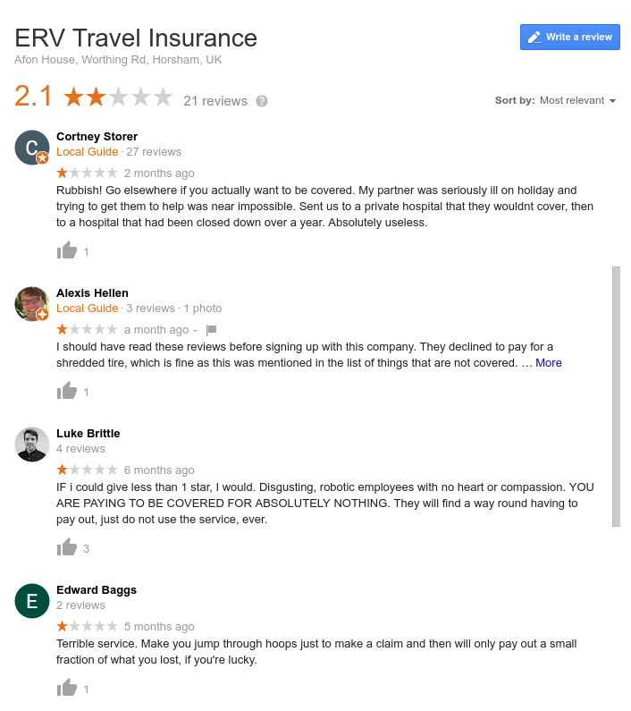
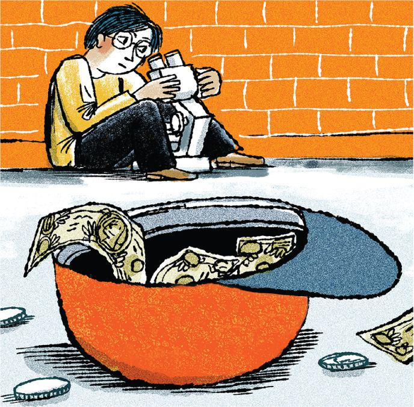

Hi. My name is Sergei and I need money...
Hi. You may be wondering who am I and why do I need money. Currently, I'm studying for my Master's at the Swiss Federal Institute of Technology in Lasusanne (EPFL), in the future I plan to AGI safety research as my plan to improve the world. About a year ago I decided to invest in myself and went to therapy. It was going well until this summer, when insurance was very reluctant to pay back for about 11 000 CHF of bills.

What have you tried already?
- Insurance – it is very slow, see below
- Immediate friends – don't have enough
- Effective Altruism grant – very unlikely to give me money for my purposes (their response)
- EPFL social commission grant – very small and slow
- Parents – don't have enough
- My salary – is only 1300CHF/month
When are you paying me back?
There are two options: either insurance pays me back, or I pay from my own money in 2020
My insurance company is a pretty shady one: SwissCare/ERV. See for yourself below or go to Google reviews
I know, I know. It is my fault that I have taken it. However, I took a contract with SwissCare, which has a bit better reputation. ERV is the actual company behind the payments and, also, it did pay out for me for smaller claims. With the bigger one (about 10K) it resulted in a 2 month delay. At the beginning, they "did not receive my email". Next, they "coulnd not open my zip archive". Next, they wanted "everything in one email and not as separate emails". Each time they replied after about one week of waiting, only to say that there was some new ridiculous issue with my claim. The forums suggest contacting the ombudsman, this makes payments go much faster
I plan to do an internship at a big tech company next Spring (March 2020), and, if everything goes well. In that case, I would be able to pay until December 2020.
So, how are you feeling now?
I am pretty depressed because I don't have therapy anymore, and also because I had to withdraw from a MIRI internship this summer due to financial issues. In addition, my current research is not going well, and I am planning to switch back to Software Engineering if I do not see improvements, as I feel I'm simply taking somebody else's place here. I am running much less than usual and I started smoking again.
How on Earth did you fuck yourself up like this?
I was working hard on my exams and a paper submission and I discussed paying later with my therapist and psychiatrist. They agreed, however, only until July. I have filed my claim to insurance in the middle of July and expected a quick payment. It did not happen even until this moment, and patience is starting to be depleted.
What are your contacts?
Write me to sergei.volodin@epfl.ch, call me to +41 78 732-01-34. Whatsapp and Telegram are supported as well.How to transfer money?
In Switzerland:- Twint: +41 78 732-01-34
- Bank transfer: IBAN CH21 0483 5152 6341 9000 0
Sergei Volodin
Echandens, Vaud
Currency: CHF
Email: sergei.volodin@epfl.ch
Name: Sergei Volodin
IBAN: CH21 0483 5152 6341 9000 0
Please write me an email to sergei.volodin@epfl.ch so that I know who to return the money to after.
Thank you...
